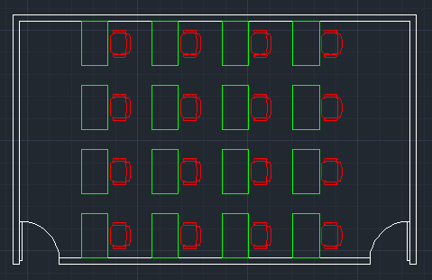

相信各位朋友平時在繪圖時，一定會使用到「圖塊」BLOCK，這跟使用「圖層」LAYER來畫圖一樣很重要，因為可以節省重複的工作步驟。
這裡簡單說明使用「圖塊」的時機，當圖面中存在2種以上重複的物件，這時候「圖塊」即可派上用場，而什麼是重複使用的物件呢？以教室平面圖來舉例，最典型的重複物件就是「桌椅」。

想想看，使用者若沒有先將「桌椅」製作成「圖塊」，而只是單純的使用複製指令，接下來若要修改圖面中的「桌椅」，就必須一個一個刪除後，然後再把新的「桌椅」複製後配置分佈在圖面中原來的位置。
AutoCAD 圖塊討論1
如果一開始就把「桌椅」製作成「圖塊」，那日後改圖即可一勞永逸，因為之需變更修改原來的圖塊，然後即可重新定義同步修改所有圖塊。
AutoCAD 圖塊討論2
■在大家了解使用「圖塊」時機，接著可以搭配「圖塊外掛工具」，讓你的工作效率獲得進一步的提升。
這裡先介紹範例使用「圖塊應用」工具列：
https://www.autocad-tw.com/t14820-topic
※使用說明※
1.快速建立圖名為「TP1」及「TP2」分解圖塊物件，圖面0,0原點一致時可以使用「TP1」，圖面0,0原點不一致時則可改用「TP2」。
註：特性為當初入到目標圖面時，仍然保有原來之圖塊名稱。
AutoCAD顧問外掛程式 圖塊應用工具1
2.而此工作階段常用的圖塊，也可透過記憶圖塊方式，總共可以記憶二十組，隨時可以插入圖面使用。
AutoCAD顧問外掛程式 圖塊應用工具2
註：「圖塊應用」工具列，還提供使用者快速開啟DWG檔編輯使用，編輯完畢時在目標圖中可以刪除舊有圖塊（記得PURGE清除），然後再插入編輯後之記憶圖塊組。
範例文章： https://www.autocad-tw.com/t16700-topic#112163
看完之後別忘投下您寶貴的一票，完成投票可以下載範例影片喔！